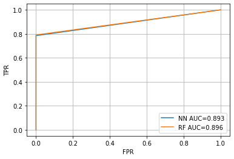

There are 11 columns in in this dataset.
step - maps a unit of time in the real world. In this case 1 step is 1 hour of time. Total steps 744 (30 days simulation).
type - CASH-IN, CASH-OUT, DEBIT, PAYMENT and TRANSFER.
amount - amount of the transaction in local currency.
nameOrig - customer who started the transaction
oldbalanceOrg - initial balance before the transaction
newbalanceOrig - new balance after the transaction
nameDest - customer who is the recipient of the transaction
oldbalanceDest - initial balance recipient before the transaction. Note that there is not information for customers that start with M (Merchants).
newbalanceDest - new balance recipient after the transaction. Note that there is not information for customers that start with M (Merchants).
isFraud - This is the transactions made by the fraudulent agents inside the simulation. In this specific dataset the fraudulent behavior of the agents aims to profit by taking control or customers accounts and try to empty the funds by transferring to another account and then cashing out of the system.
isFlaggedFraud - The business model aims to control massive transfers from one account to another and flags illegal attempts. An illegal attempt in this dataset is an attempt to transfer more than 200.000 in a single transaction.
The first 5 data is shown as below.
| 0 | 1 | 2 | 3 | 4 | |
|---|---|---|---|---|---|
| step | 1 | 1 | 1 | 1 | 1 |
| type | PAYMENT | PAYMENT | TRANSFER | CASH_OUT | PAYMENT |
| amount | 9839.64 | 1864.28 | 181 | 181 | 11668.1 |
| nameOrig | C1231006815 | C1666544295 | C1305486145 | C840083671 | C2048537720 |
| oldbalanceOrg | 170136 | 21249 | 181 | 181 | 41554 |
| newbalanceOrig | 160296 | 19384.7 | 0 | 0 | 29885.9 |
| nameDest | M1979787155 | M2044282225 | C553264065 | C38997010 | M1230701703 |
| oldbalanceDest | 0 | 0 | 0 | 21182 | 0 |
| newbalanceDest | 0 | 0 | 0 | 0 | 0 |
| isFraud | 0 | 0 | 1 | 1 | 0 |
| isFlaggedFraud | 0 | 0 | 0 | 0 | 0 |
Some fraud might happend in specific time, like midnight. We process hour utilizing step.
Also, we calculate the change of balance in original account and destination account: balanceOrig, balanceDest.
Accounts with many activities may be fraud. We process 2 new features: nameOrig_count, nameDest_count, and merge them into original dataset.
The dataset is shown as below.
| 0 | 1 | 2 | 3 | 4 | |
|---|---|---|---|---|---|
| step | 1 | 1 | 1 | 6 | 7 |
| type | PAYMENT | PAYMENT | TRANSFER | TRANSFER | CASH_IN |
| amount | 9839.64 | 1864.28 | 181 | 109986 | 10256.2 |
| nameOrig | C1231006815 | C1666544295 | C1305486145 | C570434649 | C111105514 |
| oldbalanceOrg | 170136 | 21249 | 181 | 41851 | 3.76608e+06 |
| newbalanceOrig | 160296 | 19384.7 | 0 | 0 | 3.77634e+06 |
| nameDest | M1979787155 | M2044282225 | C553264065 | C553264065 | C553264065 |
| oldbalanceDest | 0 | 0 | 0 | 0 | 109986 |
| newbalanceDest | 0 | 0 | 0 | 109986 | 99729.4 |
| isFraud | 0 | 0 | 1 | 0 | 0 |
| isFlaggedFraud | 0 | 0 | 0 | 0 | 0 |
| hour | 1 | 1 | 1 | 6 | 7 |
| balanceOrig | -9839.64 | -1864.28 | -181 | -41851 | 10256.2 |
| balanceDest | 0 | 0 | 0 | 109986 | -10256.2 |
| nameOrig_count | 1 | 1 | 1 | 1 | 2 |
| nameDest_count | 1 | 1 | 44 | 44 | 44 |
Now, let's see the distribution of some features. We utilize pandas profiling package. It generates a HTML to provide some information about the data, and visulize it.
Report for dataAs is shown, in the dataset:
1. There is no missing data in this dataset.
2. Features amount, balanceOrig, balanceDest are skewed.
3. Features nameOrig, nameDest are of high cardinality.
4. Features oldbalanceOrg, newbalanceOrig, oldbalanceDest, newbalanceDest, hour, balanceOrig, balanceDest contains many zeros.
Accounts with many activities may be fraud. We process 2 new features: nameOrig_count, nameDest_count, and merge them into original dataset.
Let's see the information and distribution of features in fraud data.
Report for fraud dataAs is shown,
1. for frauds, there are just 2 type transactions: CASH_OUT and TRANSFER.
2. for frauds, the balanceOrig are all less than 0.
3. for frauds, the balanceDest features contains lots of 10,000,000.
We transform categorical feature into one-hot-encoding. Also, we delete nameOrig and nameDest, for we have kept their count information.
Because the dataset is imbalanced, we use F1 score to see the performance of algorithm.
F1 score of Logistic Regression: 0.5553496989346919.
Logistic Regression doesn't perform well.
Because the dataset is imbalanced, we use F1 score to see the performance of Random Forest.
F1 score of Random Forest: 0.8780941116837035.
Random Forest performs well as is shown in F1 score, and it shows feature inportance.
| feature_importances | |
|---|---|
| balanceOrig | 0.313979 |
| balanceDest | 0.149411 |
| newbalanceDest | 0.117402 |
| oldbalanceOrg | 0.105300 |
| amount | 0.079536 |
| oldbalanceDest | 0.055247 |
| hour | 0.046488 |
| nameDest_count | 0.045870 |
| type_TRANSFER | 0.033916 |
| newbalanceOrig | 0.027748 |
| type_CASH_OUT | 0.020266 |
| type_PAYMENT | 0.003423 |
| type_CASH_IN | 0.001026 |
| nameOrig_count | 0.000230 |
| type_DEBIT | 0.000156 |
oldbalanceOrg is the most important feature.
F1 score of Neural Network: 0.8589850946240161.
Neural Network also performs well as is shown in F1 score.
|

|
As is shown, the RF and NN algorithms can provide a classifier, which avoid reporting normal transactions as fraud, while have 0.8 True Positive Rate.